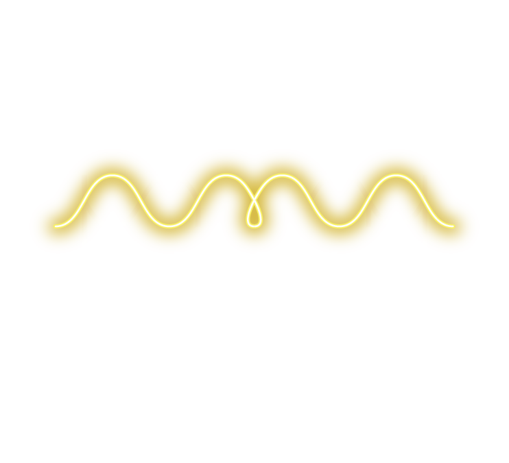

From IIT-B to Beats!
Crafting original sounds with Wavetable Synthesis.
Less Splice, More Spice 🔥
Oseanslo - Prod. by Paraglyph
140 BPM - Dark Trap
Seegrande - Prod. by Paraglyph
140 BPM - Orchestral Trap
Glitch